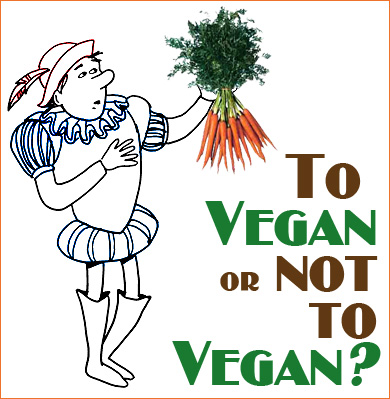

The Case Against Vegans
Why some would never be Vegan
by Monica Romero
I love being a Vegan. I find so much wonderful food that is all plant based and live a wonderful lie. Eating a plant-based diet has become a possible way to accomplish everything from clearing acne to losing weight.Going vegan sounds simple — just eliminate all animal foods like dairy, eggs, meat, and fish. Making the switch can actually be pretty complicated, however, for people with certain medical problems or particular habits. Here are a few things that might prevent you from going vegan or make the transition more difficult.
A vegan diet never sustained any traditional culture
Some cultures, such as the Masai tribe in Africa, consumed almost exclusively animal products. The Masai ate meat, milk and blood from their cattle, experiencing profound health and incredible bone structure (which is an indicator of generational health). Cultures – such as the Inuit – that didn’t practice animal husbandry caught wild meat or fish. Groups who had the least access to animal products would forage for grubs and bugs.
Vegan diets do not provide fat-soluble vitamins A and D
Contrary to popular belief, you can’t get vitamin A from carrots. Vegetables provide carotene, a precursor to vitamin A, while animal sources such as liver and pastured egg yolks provide true vitamin A. Many people believe that carotene can be converted into vitamin A, but this conversion is usually insignificant. First, it takes a huge amount of carotene to convert to a moderate amount of vitamin A. Second, when there is poor thyroid function, impaired digestion or a a lack of healthy fats in the diet, this conversion won’t happen.
Vegan diets often rely heavily on soy
The primary concern with consuming soy in any form is the phytoestrogen content. Phytoestrogens can mimic estrogen in the body, causing a chain reaction of hormone imbalances. Although studies showing the hormonal effects of consuming soy are controversial, I believe the research indicates that we should play it safe rather than sorry. For example, one study showed that infants consuming soy formula had concentrations of blood estrogen levels 13,000 to 22,000 times higher than normal estrogen levels!